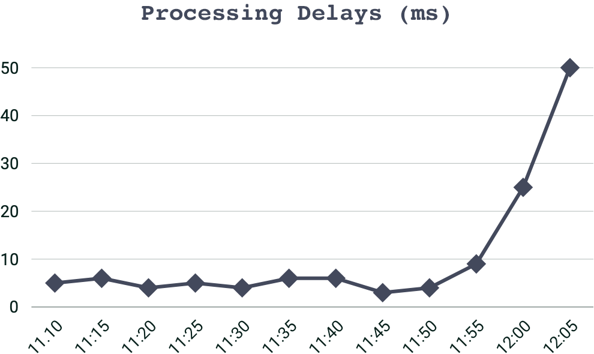
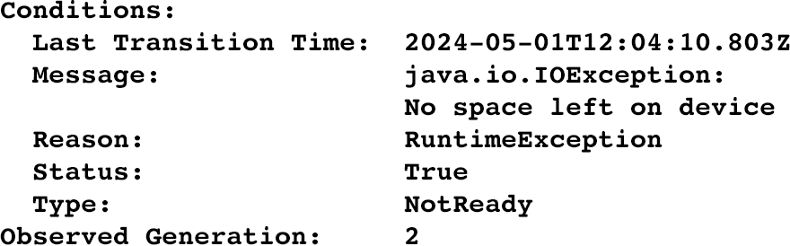
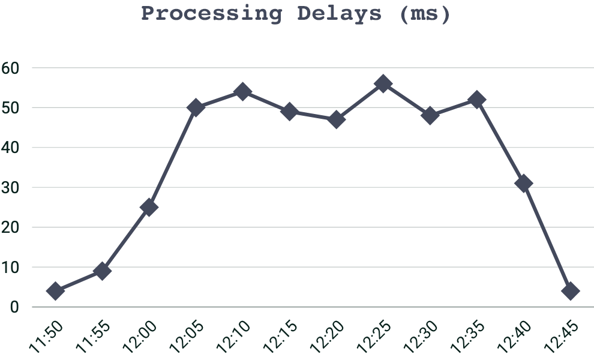

Incident Timeline
Collate the facts you have gathered into the “incident timeline” table in the PIR report. See Table 1 for a partially completed example.
| Date and Time | Event |
|---|---|
| May 1 2024 12:00 GMT | The support helpdesk begin receiving reports from customers experiencing hanging processes while using the application. |
| May 1 2024 12:04 GMT | The engineering team begin observing high processing delays in the application platform.
 |
| May 1 2024 12:07 GMT | After correlating support cases to processing delays, the engineering team escalate to the on-call team. |
| May 1 2024 12:15 GMT | The on-call team find repeating "No space left on device" errors in the logs. Example:
 |
| May 1 2024 12:19 GMT | The on-call team discover a new process writing more data to disk than expected and begin preparing a configuration change to disable that process. |
| May 1 2024 12:34 GMT | Configuration change is code reviewed and tested. The decision is made to deploy the configuration change to the live application. |
| May 1 2024 12:38 GMT | Configuration change is deployed. |
| May 1 2024 12:45 GMT | Processing times observed returning to expected levels.
 |
Table 1: Excerpt from a possible incident timeline.
Tip: Each data point in the timeline should be identified by a date and time.
Tip: Choose a single time format and use it consistently throughout, particularly if it's possible for an event response to span multiple timezones or geographies.
Tip: Do include links, graphs, charts, etc. if it helps to illustrate the event more clearly.
Piecing together the sequence of events before the PIR meeting is vital because it establishes a common understanding of the incident.
Once we are all discussing the same issue, meaningful learning can then take place.
Familiarising yourself with the timeline will also give you a sense of the flow of events, the scope of the incident, and the personalities involved.
This information will prepare you to guide the PIR meeting and inform the types of questions to ask.
Once your incident timeline is complete, you now have a draft PIR report and you are now ready to facilitate a PIR meeting!